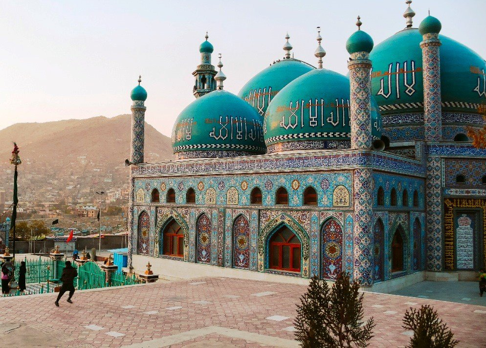

Afghanistan's Art and Culture
Afghanistan's culture has endured for more than three millennia, dating back to the Achaemenid Empire's era in 500 BCE, and it comprises the country's diverse cultural heritage. Afghanistan's culture has long been closely linked to that of neighboring Persia, sharing a common religion as a result of thousands of years of cohabitation. One historian referred to it as the "roundabout of the ancient world" because of its historical significance as a hub of diversity situated at the intersection of Central, South, and Western Asia. Afghan carpet, teapot, sheer pira dessert, and tabla and harmonium musical instruments are examples of elements of Afghan culture. Afghanistan is mostly a tribal nation, with distinct subcultures found in each of its provinces. In spite of this, almost all Afghans adhere to Islamic customs, observe the same holidays, dress alike, eat similarly, listen to similar music, and speak many languages to some degree. Turko-Persian and Indo-Persian characteristics are closely linked to its culture, as seen by aspects of its language, food, and classical music. In scholarly terms, Afghan culture is becoming a more lively field of study. More recently, the protracted fighting in Afghanistan has put Afghan culture in danger and caused it to become divided.
Break Down of Culture
Music
Traditionally, only men have been involved in theater acting. Recently, in theater arts, women have begun to take center stage. The country has seen multiple battles since the 1980s, which has resulted in the suppression of music and little recording for foreigners. The Taliban regime outlawed instrumental music and most public performances of songs in the 1990s. In the cities of other nations, a large number of singers and musicians kept up their profession. Cities in Pakistan including Peshawar, Karachi, and Islamabad are significant hubs for the export of Afghan music. Although Kabul has long been the center of culture in the area, outsiders have a tendency to concentrate on Herat and Mazar-e-Sharif because of their Qataghani architecture. Dari-Persian and Pashto are commonly used for song lyrics throughout the nation. Uzbeki, Hazaragi, Hindi, and Western-style music are also highly favored in Afghanistan. Afghans play a variety of instruments because they love music. They also like to perform the Attan, which is regarded as Afghanistan's national dance. Folk tunes and ballads are commonly heard in the nation. Nearly everyone is familiar with many of the songs, which have been popular for a long time. The primary instruments used in traditional Afghan music are: Harmonium, Santur, Chang, Rubab, Tabla, Sitar, Zurna, Flute, Dayereh, Tanbur, Dambura.
Language and Literature of Afghanistan
Language in Afghanistan
Although Pashto and Dari are both recognized as official languages in Afghanistan, the majority speaks Dari (Afghan Persian) as their first language. The majority of the population speaks Pashto in the east and south of the country, while Persian/Dari is spoken in the country's north and center. Dari and Pashto are the two languages spoken by Afghans in the country's western areas. The majority of people, especially those who reside in large cities with a diverse populace, speak both languages fluently. In their own territories, several other languages are spoken, such as Balochi, Turkmen, and Uzbek. The younger generation is gradually starting to speak English more and more. The Tajik, Uzbek, and Turkmen populations in the north of Afghanistan make up the majority of the fewer Afghans who speak Russian.
Literature of Afghanistan
Poetry
Poetry in Afghanistan has long been a cultural tradition and passion. It is mainly in Persian/Dari and Pashto languages, although in modern times it is also becoming more recognized in this country. Poetry in Afghanistan has long been a cultural tradition and passion. It is mainly in Persian/Dari and Pashto languages, although in modern times it is also becoming more recognized in The other languages spoken in Afghanistan. Afghan culture greatly values the poetry of the classical Persian and Pashto languages. Since poetry has become so ingrained in the local culture, it has always been one of the main pillars of education in the area. Khushal Khan Khattak, Rahman Baba, Massoud Nawabi, Nazo Tokhi, Ahmad Shah Durrani, and Ghulam Muhammad Tarzi are a few well-known poets. From the tenth to the fifteenth centuries, notable Persian-language poets and writers include Rumi, Rabi'a Balkhi, Khwaja Abdullah Ansari, Jami, Alisher Navoi, Sanai, Abu Mansur Daqiqi, Farrukhi Sistani, Unsuri, and Anvari. Modern Persian poets and writers include Sufi Ashqari and Khalilullah Khalili.
Proverbs
The Afghan people value wit and cunning in conversation. "Proverbs" in Dari, or "zarbul masalha" (pronounced zar-bull mah-sal-HAA), are a significant part of Afghan culture. During the Afghan war, U.S. Navy Captain Edward Zellem was a pioneer in the use of Afghan proverbs as a means of fostering positive relationships. In 2012, he published two bilingual collections of Afghan proverbs in Dari and English.
Pet Keeping in Afghanistan
In Afghanistan, birds are the most common species kept as pets. A specialized daily market in Kabul offers a large assortment of birds from all over the world.
Afghanistan's Architectural landscape
Architecture
The Ghor Province's Herat, Mazar-I-Sharif, Ghazni, Qandahar, and Firuzkoh are home to significant architectural sites. The area has significantly influenced global architecture. AFGHA 2001 has been recognized as a World Heritage Site by UNESCO. Housing Traditionally, houses in rural Afghanistan were constructed of mudbricks and mud, with a private rectangular courtyard encircling the rooms where women and children could move about without being noticed by outsiders. But in recent years, Afghans in rural areas have started constructing homes that resemble those found in large cities using cement and bricks. They usually live in fortified villages known as qalahs ("fortresses") in the north and west, but in the mountainous northern and eastern regions, they live differently, such as in the wooden multistory homes of Nuristan. Sons of married couples frequently live together in shared quarters but have separate addresses. Afghan homes have a unique space called a hujra where men congregate and mingle. Many Afghans reside in contemporary homes or apartments in the larger cities. The kuchi people are nomadic and travel throughout the country frequently, so they live in big tents.The northern nomads who are of Turkic or Mongol descent typically reside in yurts. In the hilly regions of the Afghan countryside, one often sees a mud brick home perched on a mountainside.
Art in Afghanistan
Afghanistan has a rich artistic heritage; its cave murals contain the oldest known examples of oil painting in the world. One of the most renowned miniature artists of the Timurid and early Safavid eras is Kamaleddin Behzad of Herat, whose works in Afghan art incorporate Persian miniature style. The country started utilizing Western artistic techniques in the 1900s. During the 20th century, Abdul Ghafoor Breshna was a well-known painter and sketch artist from Kabul, Afghanistan. Originally, men created almost all of Afghanistan's art, but more and more women are enrolling in Kabul University's art programs. The National Museum of Afghanistan, National Gallery of Afghanistan, and National Archives of Afghanistan in Kabul are the main hubs for art. The nation is home to numerous art schools. Young people can learn about contemporary paintings at Kabul's Center for Contemporary Arts Afghanistan (CCAA).
Afghanistan is the home of the most well-known pottery production, primarily in the village of Istalif. Many of these pieces have a turquoise color to them.
For centuries, carpet-making has been a prominent art form. Afghanistan is well-known for producing exquisite oriental carpets. Afghan carpets are distinctive to Afghanistan because of their particular prints.

Afghanistan is well-known for producing Afghan rugs, which are typically woven by hand using a variety of renowned and highly valued designs.
Afghan food
Afghanistan's diverse terrain supports a wide range of crops. The staples of Afghan cuisine are rice, wheat, maize, and barley, which are the main crops grown in the country. Unlike the Pakistanis who live nearby, Afghans do not enjoy spicy food. The main component of the Afghan diet is fruits, both fresh and dried. Afghanistan is renowned for its exquisite fruits, particularly its extra-sweet jumbo-sized melons, pomegranates, and grapes. Several well-known Afghan recipes, arranged from left to right: 1. Tandoori chicken; 2. Palao and salad; 3. Lamb grilled kebab (seekh kabab); and 4. Mantu (dumplings). A fusion of Middle Eastern, South Asian, Eastern, and Central Asian culinary traditions can be found in Afghan cuisine. Almost all Afghan cuisines are non-spicy. Some of the most famouss Afghan dishes:Gosh Feel (pastry), Halwa, Shir Berinj (rice pudding), Ferni, Kadu Bouranee (sweet pumpkins), Jelabi, Maleeda or Khajoor, Spice Rub.
Afghan Clothing
Afghan traditional dress typically covers the entire body with a loose top and a form of head covering. The dresses are very colorful, especially women's.
Afghan traditional sports
The sports in Afghanistan are organized by the Afghan Sports Federation, which promotes football, cricket, basketball, volleyball, golf, handball, boxing, taekwondo, track and field, bowling, skating and several others. In Afghanistan, football is still the most popular sport.The Afghan national football team was established in 1922, and it became a member of the Asian Football Confederation (AFC) in 1954 after joining FIFA in 1948. Due to the war, it was unable to participate in any international competitions from 1984 to 2003; however, it is currently working hard and aiming to join FIFA. In 2007, the women's national football team of Afghanistan was established. Constructed in the days of King Amanullah Khan, the Ghazi Stadium has served as a site for public executions by the Taliban regime. Currently, football games between teams from various provinces in the nation and neighboring nations are the main events held at the stadium. Afghanistan has had basketball since at least the 1970s, and the sport is gradually regaining popularity. Both men and women from Afghanistan play it. In addition, buzkashi is a popular sport among Afghans in the country's north. In Afghanistan, cricket has gained popularity in recent years. Since its formation in 1996, during the Taliban regime, the national cricket team of Afghanistan has played against every other international cricket team since 2001. Since early 2008, the Afghan team has advanced quickly through the World Cricket League. It took part in the 2010 ICC World Cricket League Division One, the 2010 ICC World Twenty20, and the 2009 ICC World Cup Qualifier, where it faced South Africa and India. The team took home the ACC Twenty20 Cup in 2007, 2009, 2011, and 2013, capping a four-year winning streak. In both the 2012 ICC World Twenty20 and the 2012 ICC Under-19 Cricket World Cup, it faced highly ranked teams. Afghans typically play with opponents from neighboring states, though occasionally they also play with other Asian countries.
Religion in Afghanustan
Islam is the main religion of Afghanistan and over 99.7%of Afghans are Muslims. An estimated 84.7–90% of the population adhere to Sunni Islam, while an estimated 7–15% practice Shia Islam, and approximately 1% are followers of other religions] most prominently Sikhism. In pre-Islamic era, Zoroastrianism and Buddhism and Hinduism had a strong presence in Afghanistan; in addition, Judaism and Christianity have also had a presence in Afghanistan for over a millennia.
Education

Afghanistan's Ministry of Education and Ministry of Higher Education in Kabul are in charge of overseeing both K–12 and postsecondary education. Out of the approximately 10,000 schools, 4,000 were constructed in the previous ten years. During the same time frame, over 100,000 teachers were hired and trained. More than seven million male and female students were enrolled in schools, according to a 2011 report. Habibia High School, Lycée Esteqlal, Amani High School, Aisha-i-Durani School, Ghazi High School, and Rahman Baba High School are a few of the well-known educational institutions in Kabul. Two of Kandahar's oldest schools are the Ahmad Shah Baba High School and Zarghuna Anna High School. Afghanistan has one of the lowest rates of literacy in the world, so to address this issue and spread American culture there, the United States started building a number of Lincoln learning centers. They are designed to function as platforms for programming that provide educational and other counseling services, Internet connectivity, programming venues, library services, and English language instruction. Reaching at least 4,000 Afghan citizens per month in each location is one of the program's objectives. Literacy training is now required for national police and the armed forces. Furthermore, in late 2011, Baghch-e-Simsim—which is modeled after the American Sesame Street—was introduced to support Afghan children's learning from preschool onward. Programs in the show "will be partly filmed in Afghanistan with the rest" lifted from other versions in Muslim countries including Egypt and Bangladesh, as well as Mexico and Russia. The American University of Afghanistan, Kabul University, Polytechnical University of Kabul, Herat University, Balkh University, Nangarhar University, Kandahar University, Khost University, Bakhtar University, and a host of other universities offer higher education across the nation. Additionally, there is a single military college in Kabul. More than a thousand women have recently taken the university entrance exam thanks to assistance from UNESCO. There are roughly 62,000 students enrolled in various universities across the nation as of 2011.
Holidays
Religious Holidays
Afghanistan's religious holidays are nearly the same as Islamic holidays. Some of the most important include Eid al-Fitr (end of Ramadan), Eid al-Adha, Ashura, and Mawlid, while the religious minorities of Afghanistan celebrate holidays unique to their respective religion.
Traditional holidays.
Farmer's Day, also known as Nauruz (Nowruz), is an ancient annual Afghan festival which celebrates both the beginning of spring and the New Year. The observances usually last two weeks, culminating on the first day of the Afghan New Year, March 21, and corresponds to the first day of the Persian Calendar. Zoroastrianism, which was practiced in ancient Persia prior to the rise of Islam, is related to Nauruz. This celebration marks the arrival of spring, when the weather becomes pleasant and plants, trees, and flowers begin to bloom. Families usually cook meals and have picnics on Nauruz day to commemorate the festival. Families prepare a variety of dishes, including Samanak, Haft-mewah, and dry fruits that begin with the letter (س) or (S), signifying the approach of spring. Families soak haft-mewah, which has seven dry fruits, in warm water two to three days prior to Nauruz. Another kind of dessert made with sugar and wheat is samanak. To prepare Samanak, women typically get together a few days prior to Nauruz. Samanak is another type of dessert made from wheat and sugar. Women usually get together days before Nauruz to prepare Samanak. They pour the ingredients into a big pot placed on an open fire and take turns to stir the wheat and sugar in the pot before it turns into a thick paste. Once prepared, the dessert is then served on the day of Nauruz. Afghan Independence Day (19 August 19), Mujahideen Victory Day (April 28), International Women's Day (March 8), Remembrance Day for Martyrs and Disabled (September 9)